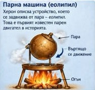

Автоматични храмови врати
Огън на олтара загрявал въздух под земята, който изтласквал вода в съд. Тежестта му отваряла вратите без ничия ръка.
Преди почти две хиляди години в Александрия един инженер накарал куха метална сфера да се върти само с помощта на пара. Устройството се нарича еолипил, или „топката на Еол“. Нищо не го движи, освен водата, която кипи в съд под него.

Устройството показва в малък мащаб онова, което днес наричаме реактивна сила. Когато нещо се изхвърля в една посока, остатъкът се избутва в обратната.
Херон не е формулирал закон за движението. Обяснението за действие и противодействие идва чак с Нютон през XVII век.
Херон работил в Александрия, град с най-голямата библиотека на древния свят, по времето, когато Египет е римска провинция. За живота му се знае малко, но трудовете му са оцелели, сред тях „Пневматика“, където е описан и еолипилът. Повечето от машините му били предназначени за изумяване на публика.
Огън на олтара загрявал въздух под земята, който изтласквал вода в съд. Тежестта му отваряла вратите без ничия ръка.
Монета, пусната в съда, натискала лост и отмервала малко течност. Това е един от най-ранните описани автомати за продажба.
Струя вода, която бликала с помощта на налягането на затворен въздух, без помпа.
Начин да се намери лицето на триъгълник само по дължините на трите му страни.
Парата върти сфера, но устройството остава демонстрация. Няма данни да е вършило полезна работа.
Италианският инженер предлага струя пара да удря лопатки на колело. Това е идея за парна турбина.
Първата широко използвана парна машина изпомпва вода от мините.
Патентът за отделен кондензатор прави парните машини много по-икономични и ги пуска в заводите и по релсите.